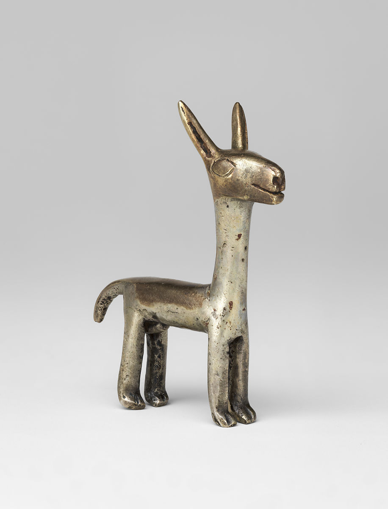

- 
-

-

Storage Jar (Aryballos)
15th–early 16th century
One of the most distinctive Inca ceramic forms developed in the Cuzco area is the so-called Cuzco bottle, also known as an aryballo because of its similarity to the Greek form. Ranging in size from four to forty-five inches, aryballos (or urpus in Quechua) have big globular chambers, pointed bases, and tall necks with a flared rim. Large urpus were used for the production, storage, and transportation of chicha, a fermented corn beer, as well as other foods. The pointed base of urpus allowed large ones to be set into the earth for stability. On the shoulder of the chamber is usually a central lug, often in the shape of a stylized animal head, as seen here. Ropes were pulled through the handles and secured around the lug for carrying on the backs of porters. Most Cuzco bottles are embellished with polychrome geometric slip designs in black and red on a cream-colored background; representational motifs are rare. On this example, the front half of the chamber is divided into several vertical bands featuring double crosses and zigzag designs on the center panel framed by wider bands of so-called khipu designs.
Smaller Cuzco bottles like the present one were probably used to serve liquids, but they may also have fulfilled a votive purpose since a number of them, including miniature ones, were found in burials in distant parts of the Inca empire, from northern coastal Ecuador to the high mountain peaks of central Chile.